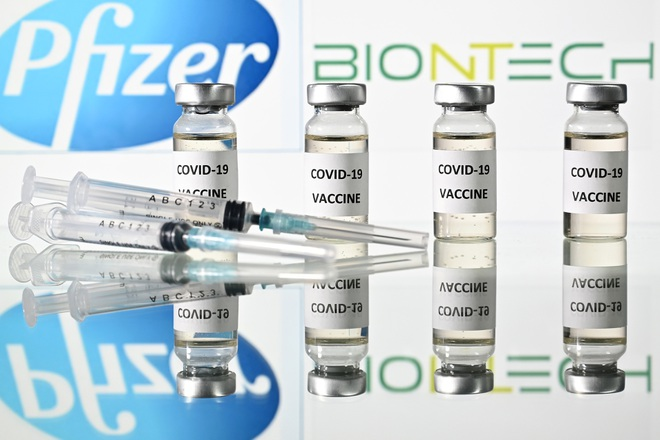
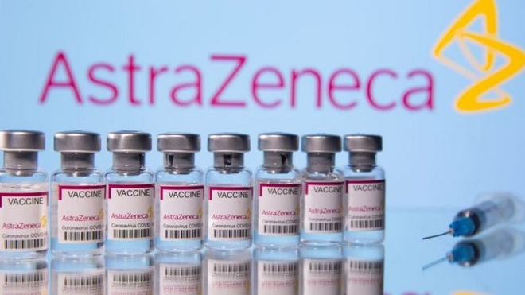

|
Vừa qua, UBND tỉnh Đồng Nai có văn bản kiến nghị Thủ tướng xem xét,
tạo điều kiện hỗ trợ một công ty đóng trên địa bàn tỉnh được nhập khẩu vắc xin
Pfizer phòng Covid-19.

Xét kiến nghị này, Thủ tướng Phạm Minh Chính đã giao Bộ trưởng Bộ Y tế quán
triệt và thông báo việc khuyến khích các địa phương, tổ chức tìm mua vắc xin
phòng Covid-19.
Bộ Y tế có nhiệm vụ quản lý việc cấp phép, kiểm tra chất lượng, bảo quản vắc
xin; tổ chức tiêm miễn phí cho người dân.
Bộ trưởng Bộ Y tế cho biết, thực hiện Kết luận của Bộ Chính trị và Nghị quyết 21
của Chính phủ, trong thời gian qua, Bộ Y tế đã phối hợp với tất cả các bộ, ban
ngành cũng như khuyến khích tất cả các địa phương, doanh nghiệp, đơn vị tham
gia vào tìm kiếm, nhập khẩu vắc xin để có nguồn vắc xin sử dụng cho người dân
Việt Nam nhanh nhất, sớm nhất và rộng nhất.
Bộ Y tế sẽ tạo điều kiện tối đa cho tất cả các địa phương và đơn vị, doanh nghiệp
trong quá trình nhập khẩu, cấp phép nhập khẩu, kiểm định vắc xin. Trong
trường hợp nhà sản xuất yêu cầu về trách nhiệm miễn trừ thì Bộ Y tế sẽ có trách
nhiệm báo cáo với Chính phủ và Bộ Y tế sẽ là cơ quan của Chính phủ thực hiện.
Trong trường hợp doanh nghiệp không có điều kiện tiêm chủng, Bộ Y tế sẽ chỉ
đạo hệ thống tiêm chủng của Nhà nước thực hiện tiêm chủng vắc xin này.
Bộ Y tế đã xem xét và rà soát lại tất cả các quy trình, thủ tục trong vấn đề về cấp
phép và đánh giá kiểm định chất lượng. Đối với các loại vắc xin đã được Tổ chức
Y tế Thế giới (WHO) cấp phép thì trong vòng 5 ngày kể từ khi nhận được đầy đủ
hồ sơ hợp pháp, hợp lệ và ủy quyền của nhà sản xuất, Hội đồng Cấp phép về vắc
xin và sinh phẩm của Bộ Y tế sẽ tiến hành họp, thẩm định và cấp phép cho vắc
xin đó.
Đồng thời, khi vắc xin được nhập khẩu vào Việt Nam, trong vòng 2 ngày, nếu có
đầy đủ hồ sơ hợp lệ về nhập khẩu vắc xin vào Việt Nam và ủy quyền của nhà sản
xuất thì Hội đồng Cấp phép về vắc xin và sinh phẩm của Bộ Y tế sẽ tiến hành họp,
thẩm định, rà soát lại toàn bộ hồ sơ và cho phép tiến hành xuất xưởng lô vắc xin
đó để có thể sử dụng theo quy định của Tổ chức Y tế Thế giới.
Bộ Y tế khuyến khích tất cả cộng đồng doanh nghiệp nhập khẩu trực tiếp vắc xin
về Việt Nam, nếu có ủy quyền chính thức của nhà sản xuất.
Đối với địa phương đã đăng ký làm việc với Bộ Y tế và cho biết có thể tiến hành
mua vaccine của các doanh nghiệp, tập đoàn, Bộ Y tế sẵn sàng tạo điều kiện cho
địa phương tiếp cận.
Thêm 800.000 liều AstraZeneca Ý hỗ trợ Việt Nam, đầu tháng 9 bàn giao
Ngày 25/8, Chính phủ Ý quyết định tài trợ 801.600 liều vắc xin AstraZeneca cho
Việt Nam thông qua cơ chế COVAX. Dự kiến số vắc xin này sẽ được vận chuyển và
bàn giao cho Việt Nam vào đầu tháng 9 tới.
Đây là kết quả của vận động cấp cao, trong đó có việc Thủ tướng Phạm Minh
Chính gửi thư cho Thủ tướng Ý Mario Draghi đề nghị hỗ trợ vắc xin và các nỗ lực
vận động mà Tổ công tác của Chính phủ về ngoại giao vắc xin đã triển khai trong
thời gian qua.
Quyết định này là minh chứng cho quan hệ Đối tác chiến lược Việt Nam-Ý, thể
hiện tinh thần đoàn kết của Chính phủ và người dân Ý đối với Việt Nam trong
thời điểm khó khăn.

Trong bối cảnh dịch bệnh diễn biến phức tạp với sự xuất hiện của những biến
chủng mới nguy hiểm và lây lan nhanh, Chính phủ Việt Nam đã xác định việc
tiếp cận được nhiều nguồn vắc xin để triển khai nhanh nhất chiến dịch tiêm
chủng mở rộng là giải pháp và ưu tiên cấp bách, góp phần giúp Việt Nam sớm
đẩy lùi dịch Covid-19.
Hiện Ý là nhà tài trợ lớn thứ tư trong EU cho cơ chế COVAX với cam kết ủng hộ 15
triệu liều vắc xin và 359 triệu USD. Với vai trò là đối tác phát triển của ASEAN,
vừa qua Ý cam kết tài trợ bổ sung 2 triệu USD vào quỹ đặc biệt của ASEAN để
chuẩn bị và ứng phó với đại dịch.
Thái Anh
Link dẫn bài đăng
|